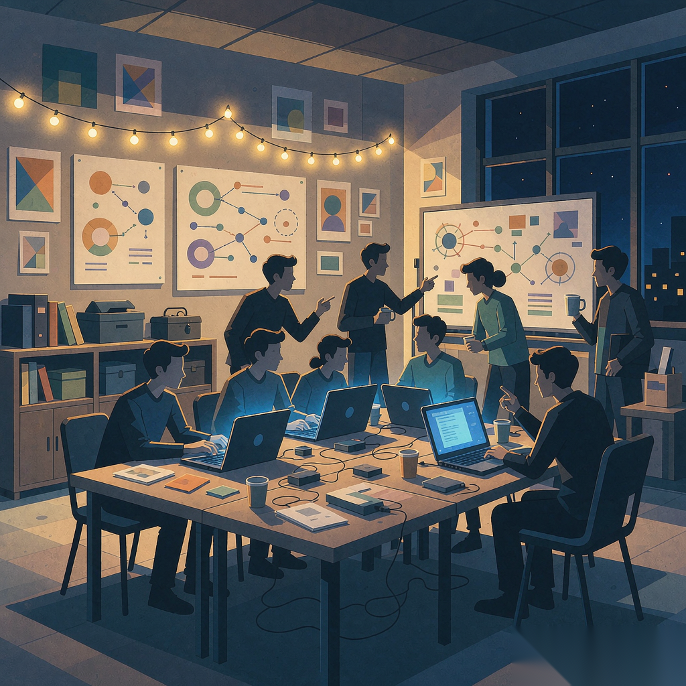

Growth · BD · AI Adoption
Marketing background, no engineering degree.
What I'm good at is making people actually adopt it — building communities from zero, closing partnerships, and sitting on-site until the solution is sold into the real workflow.
01 · About
Robin Fang — Marketing, Zhongnan University of Economics and Law.
I don't write code. I make AI products get used by real people.
Over the past two years I've applied this in three places: AI open-source communities, AI adoption in traditional industries, and campus & content growth.
I don't position myself as technical. My value is being able to hear what the business is saying and what the product is saying — and make the two meet.
02 · What I Do
Build communities from zero and turn strangers into repeat participants. Not with red packets, but with mechanism design.
On-site discovery, deal negotiation, private-channel conversion. I can sit with the owner and dig into real pain points, and I can send out a one-page deck that gets a reply.
Sponsorship deals, campus alliances, hundred-person events. Resources don't show up on their own; you go get them.
A full pipeline for WeChat / Xiaohongshu / short video: topic → production → publishing → review, with standards and data gates at every step.
Leading technical teams without a technical background: translating fuzzy requirements into shippable products, turning a loose group into a team that delivers on cadence.
03 · Numbers
04 · Experience
Client and institution names are intentionally generic.
Core Operator
Project Partner (FDE)

Site Lead
Marketing Intern
Co-founder
05 · How I Work
Off-site, you only see the workflow people want you to see.
Team-up mechanics, content state machines, data gates. Let the system run; don't babysit it.
Efficiency gains without a baseline are self-congratulation.
Actively seek the opposing view on important calls.
Connecting engineers and business, translating needs into product: that is the skill.
06 · Thinking
Execution can be replaced. Judgment can't. This is where I differ from someone who is simply good with AI tools.
AI summaries now appear in 43% of search results, up from 15% in a year. The question is no longer "what rank am I" but "will the AI cite me."
Models will commoditize; the moat is orchestration, data, and workflows. That's why I bet on FDE, not on models.
Analyzing 800k work-related messages, OpenAI found 43.5% of job-specific queries involve another occupation's work, densest at the marketing × engineering intersection — exactly the two capabilities a solo delivery unit needs.
A solo operator's edge is client understanding, solution judgment, and trust — not "I can write all the code myself."
Today it's on-site work, relationships, and a one-page deck — almost zero paid. At scale you need marketing mix modeling to measure real channel ROI, instead of assuming the last campaign that worked will keep working.
07 · Contact
If you're putting AI into real operations and need someone who understands both the business and the product — or you just want to talk growth — reach out.
weiyangfang950@gmail.com